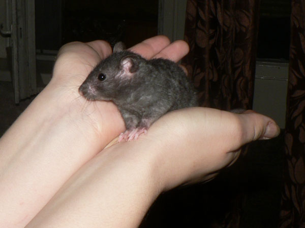
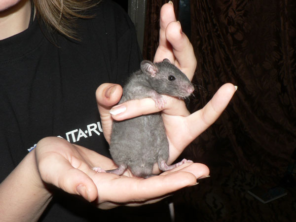
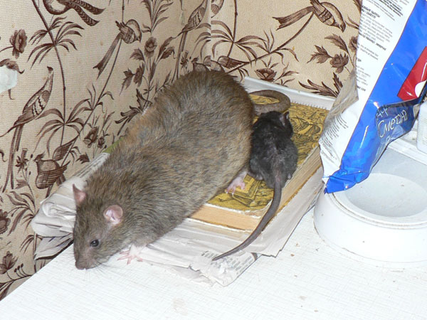
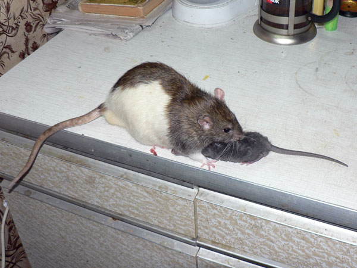
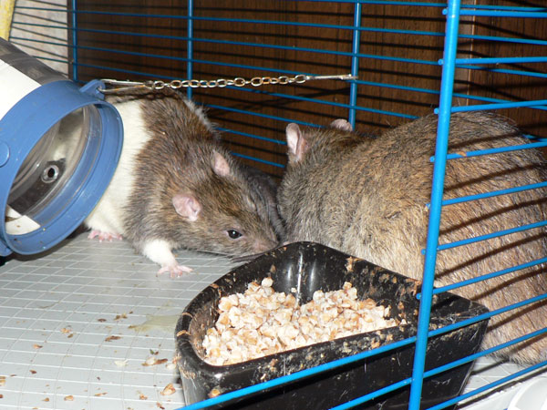
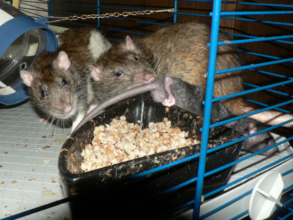
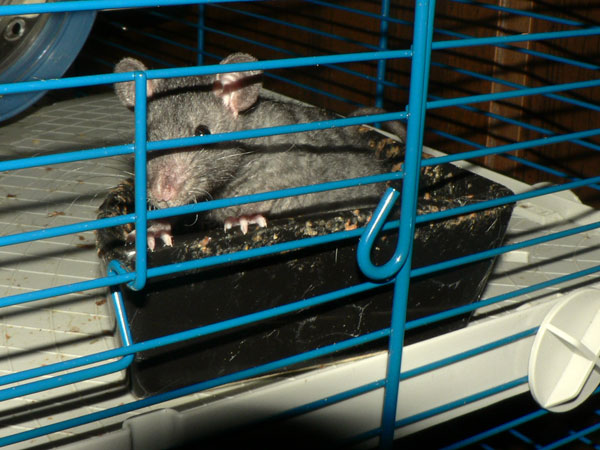

Сентябрь 2009
Все, крысолимит. У нас появился шестой жилец.
Коробку с
крысятами подкинули 1 сентября на крыльцо школы,
девушка с форума
подобрала и мы взяли себе одного.
Назвали Сентябрь
Первый-Крылечкин.
По окрасу — Black self rex.
Уже рексов
выкидывают, офигеть…

Поставил переноску на клетку. Дон Рэба и Никодим полезли выяснять, что там еще такое.

Сентябрь Первый-Крылечкин собственной персоной.

Вот такая мелочь — 73 грамма.

Возраст, по идее, пять недель.

Вот такой длинный хвостик.

Представили дону Рэбе как главному.

… а ему пофиг.

Позвали дона Румату как самого наглого.

… а ему пофиг.

Ну и посадили мелкого в клетку. Его пообнюхивали (на заднем плане. плохо видно).

… а ему пофиг. Пошел новый дом изучать.

Благородные доны с удивлением таращатся на беспородную мелочь.

Сосискину тоже интересно.

Утро. Сеня грустно смотрит из пустой миски.

— Ну покормите меня, пожалуйста! Я еще не знаю, что на первом этаже сухой корм есть…